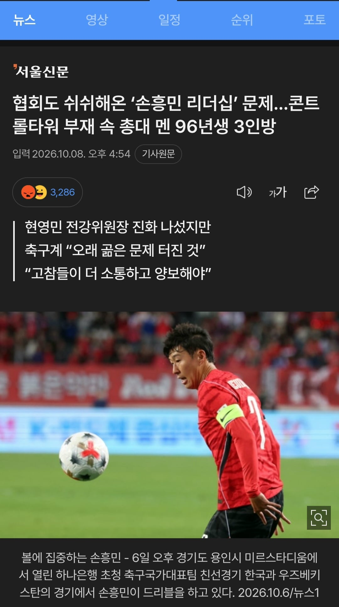
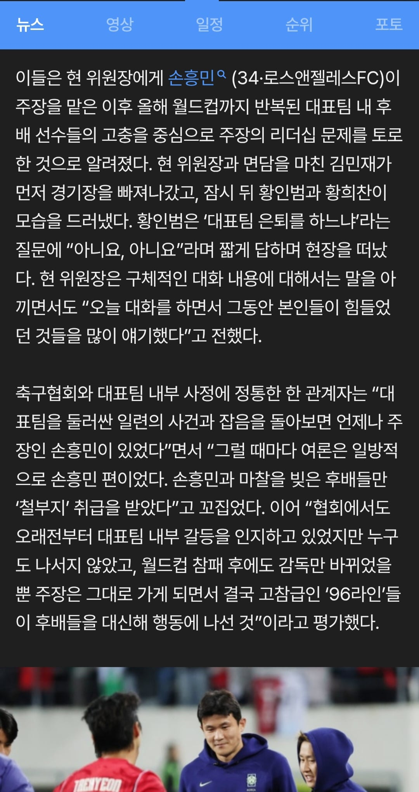

김민재 등 96년생 3인방이 "주장의 리더십 문제를 토로"
"대표팀을 둘러싼 일련의 사건과 잡음을 보면 언제나 주장인 손흥민이 있었다... 축협 관계자
투명하다 투명해


김민재 등 96년생 3인방이 "주장의 리더십 문제를 토로"
"대표팀을 둘러싼 일련의 사건과 잡음을 보면 언제나 주장인 손흥민이 있었다... 축협 관계자
투명하다 투명해
여자들식 기싸움 보는 느낌임 답 정해두고 지 생각대로 유도하려는게 좆같긴함
고참 대우 안해주는 놈들이 꼭 왕고되면 개지랄 하던데 과연 어떻게 할지 두고보겠어
이런거 네이버가보면 댓글로 토트넘 주장으로 우승도 이끌었다 이딴 소리함
탁구싸움 ㄱ-
애초에 주장선임권한 있는 감독패싱하고 현영민한테 주장선임건 얘기한거는 임시감독딱이라 개무시함 ㅅㄱ 이런 자세라 비호감
뭐가 문젠지 인터뷰로 정확하게 밝힐 자신도 없으면서 정황만 생산하고 대중들 말 나오게 여론전하는 것도 비호감
무슨 축구선수가 아니고 정치인이 경기뛰는거임?
흔드는게 누구임? 원팀 만들고 싶은데 지금 이게 원팀 만드는 행동이 맞는건지
축협만 문제 있는게 아니고 수년째 경기력 개판인건 선수들 멘탈리티 탓도 지분 크다는게 이번일로 방증됨
그래서 손흥민이 엄석대짓을 했는지 이대로 가다간 완장한번 못차겠다 싶어서 3인방의 반란인건지 둘 중에 하나 시원하게 까발리자 게이처럼 단톡방이나 흘려서 간보지말고
손까 손빠 거르고 손흥민이 캡틴이라는 느낌은 없긴해
축혐맘 새끼들 바글바글하노
내말이 어질어질하다
시발 펨코가서 손흥민으로 검색했더니 거기서 건너온 손북공정 축깨들이었네 ㅋㅋ 하다하다 축협 밭갈이를 하냐 펨대남들아 ㅋㅋ
손흥민은 리더자격없음을 다 알고있지않나
??? 그럼 누구?
아무도없어 리더자격있는선수
니 아빠도 자격 없지
왜이렇게 화났어들
없는 이유가 뭐며 누가 다 그리 알고 있다는거에요 협회 관계자님
여초식 말투 그냥 개좆같네 그냥 다 알고있지 않아? 언냐들~ ㅄ ㅋㅋ
음... 손흥민 몰아가기가 뭔가 조직적인거 같은 느낌이 들긴해. 득달같이 달려들어서 다는 댓글들 몇 몇도 좀 쌔한 느낌이 들고...
디씨+펨코 국까 일뽕 국축러에 조중동까지 대표팀 흔드는 꼬라지 진짜 레전드 ㅋㅋㅋ
커뮤에 언론까지 이렇게까지 손흥민 죽이려는건 처음봄
기자 군대 발언떄는 아무말안하고 입닥치던 언론들 지금 와서는 신나게 손흥민 까는거보면 기레기새끼들 이라는 말이 정확함
차범근도 그렇고 한국 축구는 진짜 잘난 놈 있으면 무조건 밟아야 풀리나봄
아 일단 축협이나 3인방 잘못은 있는거 맞는데 손흥민도 주장으로서 문제있다고 ㅇㅈㄹ ㅋㅋ
Himass 욕할거없다니까
그러니까 축협이랑 감독이 월드컵 제대로 말아먹고 제대로 책임이고 나발이고 수습하는 모습도 별로 보이지 않고 스리슬쩍 손흥민을 타겟 잡고 쥐고 흔드는걸로만 보이는데
손흥민은 끝물이라 파악했나 보네
개웃긴팬덤ㅋㅋㅋ
말이 된다고 생각하니 EPL 토트넘에서 주장하던 사람한테?
에라이 개축협
축협맘 버러지새끼들은 그냥 코박고 다 뒤졌으면 좋겠다
김민재가 경기후 인터뷰에서 "수비수만 죽어난다"라는 뜻이 그뜻이었나?
손흥민 문제라고 하더라도 축협에서 이를 인정할게 아니라 내부적으로 안흔들리게 스스로 처리해야할 문제를 외부에다 왜 퍼트리냐고
본질은 팀결속부분은 A매치로 꼴랑 몇번 만나는 주장보다 축협의 관리영역이 훨씬 큰데 이번에도 지들 내부 문제를 외부에다 퍼트려서 손흥민 욕받이로 세워서 면피하는 꼴에, 아닌데 손흥민 문제인데? 이지랄하고 있는 저능아들 왜케 많냐
그냥 국대은퇴하고 행복축구했으면 좋겠다
대표팀 역사상 이런 콩가루도 첨본다 답도 없는것들 홍명보가 주장 교체 이야기 나올때 축협 의지 인줄 알았더만 선수들도 개입되어 있나보네
수준도 떨어지는데 오더도 안따를거면 걍 딸배나 해야지
ㅋㅋㅋ
걍 진짜 졷되보라고 모르는척해서 축협병신들끼리 뛰게해야함
그냥 시원하게 까봐라 뭐가 문제인지
그럴 자신 없으면 그냥 조용히 해결하던가 ㅋㅋ
쏘니처럼 해외팀에서 캡틴 달고 리더십 보여줄 만한 사람이 지금은 없긴 함
근데 국대에서의 쏘니 리더십은 의심되긴 한다
토트넘에서는 외국선수들이니 쏘니가 팀원을 더 존중했나 본데, 국대 캡틴 맡고나서는 박지성 시절에 없던 꼰대문화 부활했음
옌스 인터뷰 보면 선배들 식사 마칠 때까지 후배는 앉아있어야 한다거나
선배들에게 과일 가져다 줘야 했고
엘베도 선배들에게 양보해야 했음
박지성이 없앴던 부조리가 부활한 거다
쏘니가 토트넘 캡틴 시절에도 그런 부조리 있었을까?
국대에서의 쏘니 리더십이 의심되긴 한다
탁구도 쉬는 시간에 쳤던 거라더만
토트넘에서도 자유시간에 간섭했겠냐
즉, 쏘니의 리더십이 국대에서는 지나친 통제로 발현된 탓이 크지 않나 싶다
쏘니는 스피드+킥력 두 가지로 탑을 찍었는데
스피드가 감소하니까 이제는 단점이 부각되네
오프더볼 움직임, 퍼스트 터치는 솔직히 국대로서 수준이하의 모습이다
그러니 예전의 독보적 실력일 때는 참았던 팀원들이 서서히 들고 일어나는 것 아닌가 싶네
축협 박살냈으면 이딴 개짓거리도 못했지. 명보 런할때 축협이라도 터트렸어야됐는데 그새끼들이 다 그자리에 있으니 뭘 하겠냐. 애꿎은 사람 잡아서 화력분산이나 시도하지. 96들도 손흥민 없었으면 지들이 욕받이로 내세워졌을거라는거 알고 저러냐
매번 내부일이 자꾸 유출되고 쓸데없이 부풀어서 기사 쏟아지고 대국민 사과해야되고
벌레같은 프락치 쥐새끼가 있다는데 경기할때마다 유출해서 이득보는 그새끼가 범인일듯 한데 꼭 잡았으면!
실력없는 새끼들이 존나게 시끄러움
실력이 좋은 건 팩트라 요리조리 잘피해 다녔지 뭐 ㅋㅋㅋ 그리고 맘들이 너무 많음 여기서도 다 쉴드쳐주고. 가까이서 보는 애들은 가식적인 게 꼴받았나보지
외국 클럽에선 그렇게 인망 좋은 손흥민이 이상하게 국대만 오면 리더십 문제 터지더라.
그립습니다 우리들의 영원한 캡친 지송팍
96 놈들이 에겐스러운게 문제지 손이 성역이
아니고 문제면 문제라고 박으라고 ㅋㅋ
이게 무슨 총대 ㅋ
걍 에겐3인방이지
쉬쉬한다 하니까 오줌마려워
별 ㅄ같은 기사를 다 보네. 팀 내부 리더쉽 문제는 지지고 볶고 어떻게 해서든 내부에서 해결해. 뭔 축협 인사까지 동원해서 기사로 까발려서는 뒤흔들고 자빠졌어. 이게 선수 저격해서 욕먹게 하는 거지 팀 리더쉽에 뭔 도움이 되겠나? 내부 사정이야 내가 잘 모르겠다만 명확한 반증이 나오기 전까진 축혐 임원+기레기를 믿느니 내가 알던 손흥민을 믿겠다.
손흥민 ㅈㄴ 불쌍하다 ㅅㅂ
96라인+ 설영우.이태석 퇴출시켜라. 없어도 된다.
손흥민이 뭘 잘못했는지는 말할수 없지만 아무튼 손흥민이 잘못한거임.. 증거는 96이 개보지짓을 하는거야!! 병신짓은 96이 한게 왜 손흥민이 병신인 이유가 되는지는 모르겠지만 아무튼 손흥민 잘못임..